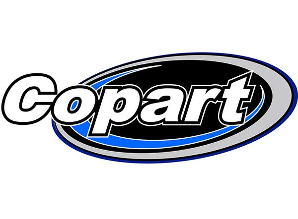

Якісні авто з США
Авто з аукціону
Як це працює
Існує кілька десятків американських аукціонів автомобілів. Всі вони відрізняються станом авто, аудиторією покупців, інфраструктурою, способом організації торгів і територіальним розташуванням. Але є серед них і трійка лідерів, з якими ви можете працювати прямо з України, за посередництва компанії АТЛ:
Иншуренс (IAAI);
Копарт (Copart);
Манхейм (Manheim).
Чому АТЛ працює саме з цими майданчиками? Тому що разом вони становлять велику частину ринку старих авто в Америці. При цьому категорії продаваних авто на кожному аукціоні різні.
Що таке IAAI
Візьмемо, наприклад, авто аукціон США Іншуренс. По-перше, право продажу на цьому аукціоні мають тільки юридичні особи. В основному це страхові компанії, що і відображено в назві аукціону. Завдяки такому обмеженню ризик «нарватися» на недобросовісного продавця зводиться до нуля. Представлений асортимент - авто, які постраждали внаслідок аварії, нещасного випадку, наруги або утоплення, простіше кажучи, весь спектр страхових випадків. Ступінь «вбитості» авто може бути найрізноманітнішою. У свою чергу, аукціон США захищає і продавців, реєструючи на торги тільки ліцензованих дилерів із продажу старих авто. Інтерфейс аукціону має переклад на російську мову, тому наші клієнти можуть самі підібрати вподобане авто і доручити нашим спеціалістам набути його для вас за прийнятну ціну.

Знаменітый Copart
Аукціон Copart є найбільш розвиненим віртуальним майданчиком з продажу не тільки американських авто, але і в інших країнах. Завдяки упору на сучасні технології і створення власного движка V8 стало можливим придбати авто з будь-якої точки світу, включно з України. На сервісі представлено понад 150 тисяч авто для продажу. Інформація по кожному авто представлена в найбільш доступній формі, але, якщо ви не володієте англійською, ви можете ознайомитись з лотами на цьому аукціоні через сайт АТЛ. При необхідності задати питання продавцю ви зможете скористатися допомогою наших фахівців. Аукціонний збір стягується в розмірі 10%. Реєстрація проста і звична.

Продаж справних авто на Manheim
Основною відмінною рисою цього аукціону є відсутність битих і проблемних авто з США. Представленому тут товару зазвичай не більше трьох років, серед плюсів - відмінний технічний стан, яке у нас звучить як «легке б / у». Але взяти участь в ньому також можуть лише спеціально акредитовані юрособи, дилери, які мають ліцензію на здійснення такої діяльності. Участь в аукціоні за посередництва фахівців компанії АТЛ - це можливість придбати автомобіль своєї мрії, заощадивши при цьому досить значну для України суму!